天台四教儀集註卷第五 稼五
二集諦者即見思惑又云見修又云四住又云染污無知又云取相惑又云枝末無明又云通惑又云界內惑雖名不同但見思耳。
集者招集為義惑與業俱能招生死而今但云惑者前苦諦中已明善惡業故即見思惑示集諦之體也見者若云見理時能斷此惑即從觧得名若云見秖是假(謂因成相續相待三假也)假者不實為義即當體受稱。
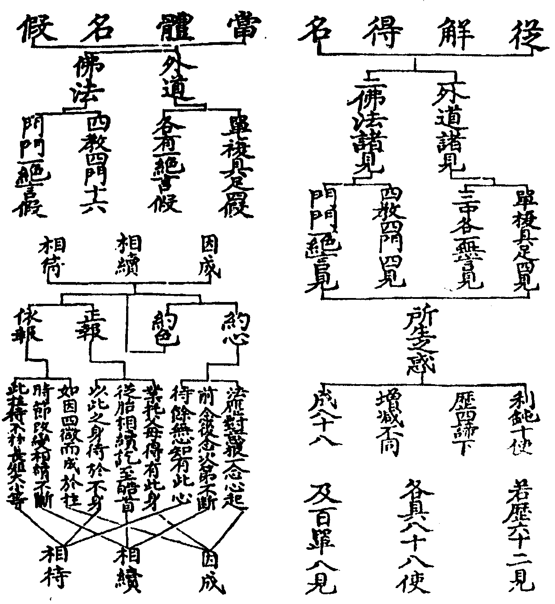
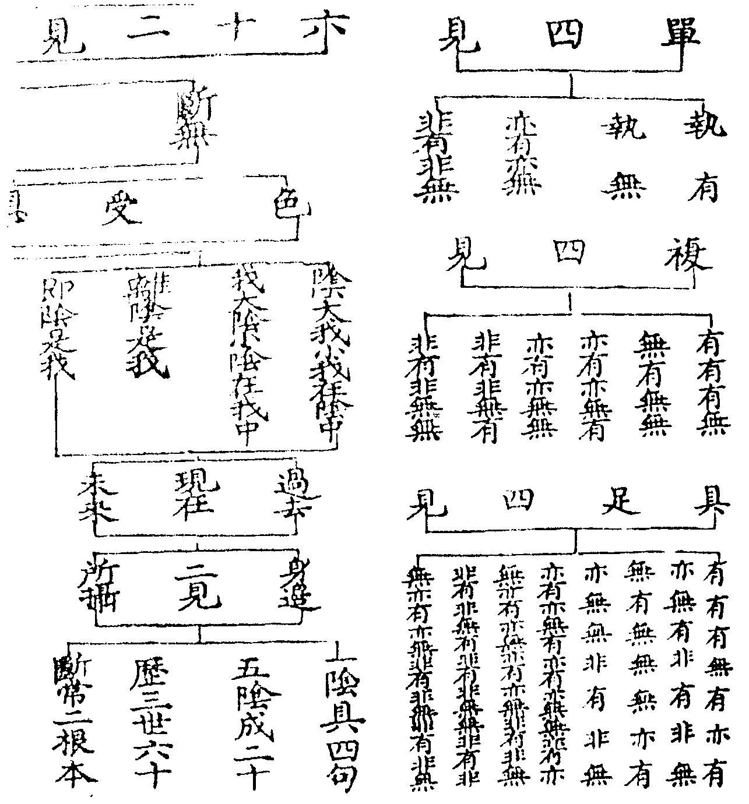
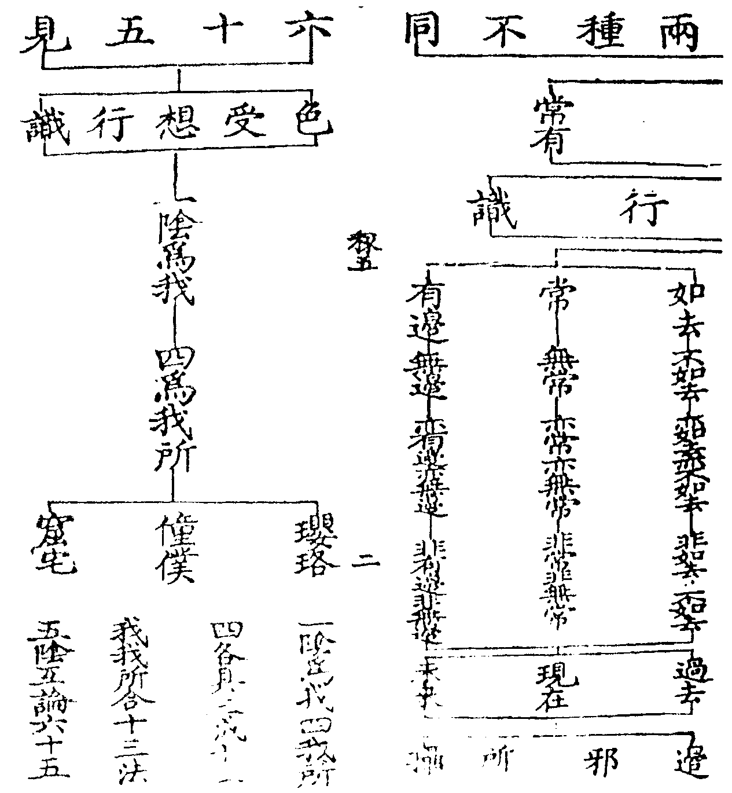
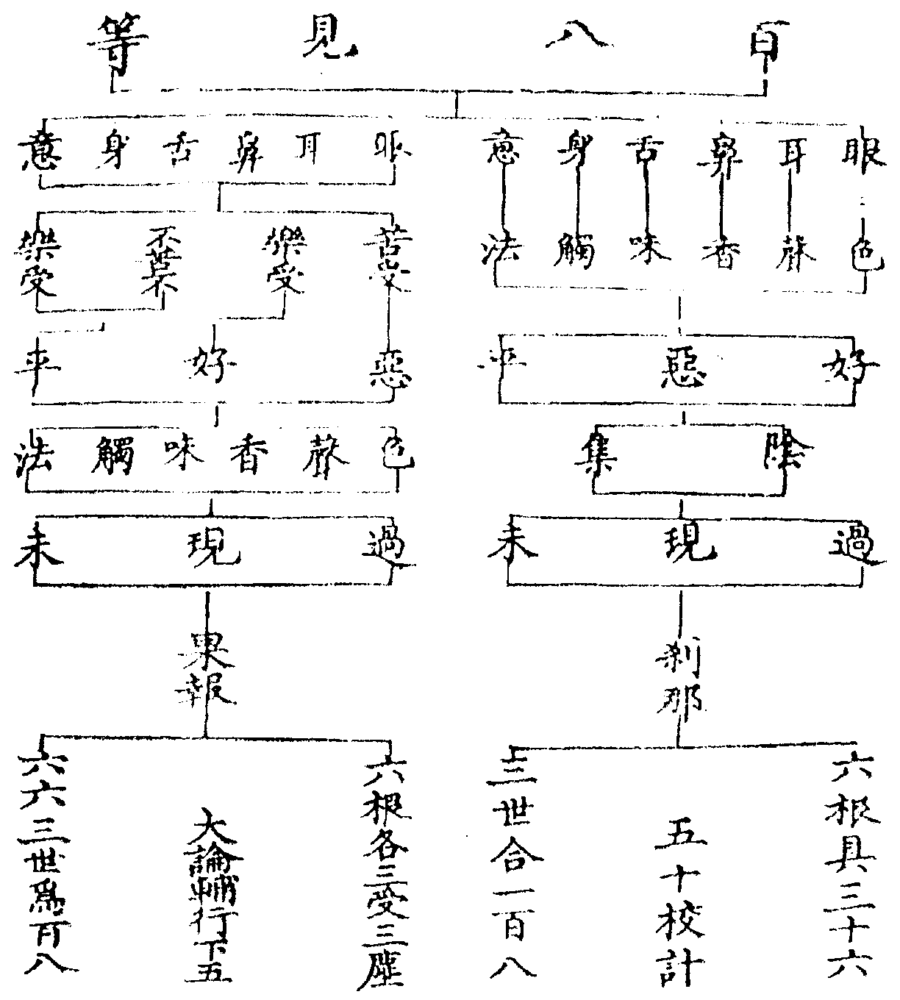
思惑入修道位重慮緣真輔行云慮謂思慮見道觀真已發無漏今復重觀故云重慮此惑即除名思惟惑此從觧得名若云思假及愛惑者此當體受稱然見惑從法塵起能障真理思惑從五塵起能牽三界此皆約欲界多分說細論不拘見修見惑見道所斷思惑修道所斷約能斷位名所斷惑也四住見為一住思惑分三因此二惑故住着三界染污無知妙樂一廿四云然小乘中立二無知染污無知無明為體不染污無知劣慧為體謂味勢熟德時數量耳(文)(諸法滋味損益等勢成熟德用近遠等時一二等數大小等量)取相惑三惑皆名取相觀音玄記上七云見思取生死相塵沙取涅盤相無明取二邊相今見思取六道生死之相也枝末無明對根本得名見思以無明為根本故云枝末於一切法無所明了故曰無明通惑對別惑得名見思通三乘人斷故曰通惑塵沙無明別在菩薩所斷故名別惑界內惑對界外得名見思潤有漏業招三界生故云界內塵沙潤無漏業無明潤非漏非無漏業招變易生故云界外塵沙則通界內外也。
初釋見惑有八十八使所謂一身見二邊見三見取四戒取五邪見(已上利使)六貪七瞋八癡九慢十疑(已上鈍使)此十使歷三界四諦下增减不同成八十八謂欲界苦十使具足集滅各七使除身見邊見戒取道諦八使除身見邊見四諦下合為三十二上二界四諦下餘皆如欲界只於每諦下除瞋使故一界各有二十八二界合為五十六并前三十二合為八十八使也。
法界次第上七云使以驅役為義能驅役行者心神流轉三界故通受使名身見於陰入界中妄計為身強立主宰恒起我見諸文或云身見或云我見止觀十(十六)雙列二名云求我叵得故則身見破身見破故則我見破文輔行五下九云外人計我如麻豆及母指等或計徧身神身四句及一異等文邊見於身見上計我斷常執常非斷執斷非常隨執一邊也見取謂因此見通至非想信此非餘執劣為勝戒取執邪為道名非因計因及雞狗等戒名戒取邪見由計斷常不信因果復計此我以為自然冥初世性世性即是二十五諦(一冥初二從覺等如圖子)及六諦等或計從於父母微塵梵天等生皆名邪見貪是己法者愛即指五見為己法也嗔非己法故嗔癡不識見中苦集慢我觧他不解疑猶豫不决利鈍利則造次恒有鈍則推利方生五鈍亦名見中思亦名推利思亦名背上使利使若去鈍使亦亡故屬見攝四諦下惑增减不同前云集諦雖在惑業今歷四諦者集是能迷苦是所迷又道滅雖是出世間因果由迷苦集道滅亦迷如不識病亦迷於藥此四諦惑俱舍頌云苦下具一切集滅各除三道除於二見上界不行嗔輔行五下九問四諦下惑依何理教增减不同耶荅依阿毘曇上界不行嗔無相害故有善欲故性寂靜故心滋潤故然止而不行非能斷也故法華中蜈蚣喻嗔通三界妙樂六(三十二)云小乘中云上界無恚非[書-曰+皿]理也問何故身邊唯在苦耶荅此見依身故名身見依於身見而起邊見餘三非身故無此見又見苦斷故故在苦下四空無色有身見者雖無麄色而有細色所執未云即是身見非想八苦其義可知問戒取何故唯在苦道荅唯彼所起問戒取計因苦諦是果何故在苦荅計多苦行望為實因故在苦下非出世道妄為出道是故復於道處能起集滅異此故無身見無身見故亦無邊見集滅非道不生戒取又復戒取在於苦道二諦下者本是內道見苦能斷本外道者見道能斷故惟在二此有親踈之義孤山作六十四句觧(云云)八十八使且據見惑婆沙中云九十八使者兼十思故也輔行五下十云以十纏為九十八論文所出不同或名三結止觀云初果所破如竭四十里水功夫甚大恐聞者生疑畧斷三結謂身見戒取疑(如下圖示)。
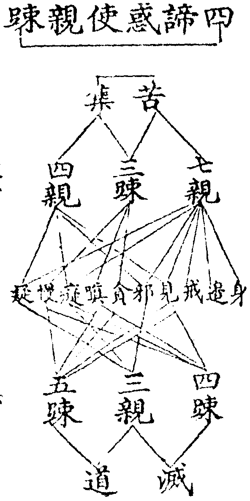
二明思惑者有八十一品謂三界分為九地欲界合為一地四禪四定為八共為九地欲界一地中有九品貪嗔癡慢言九品者上上上中上下中上中中中下下上下中下下上八地各有九品除瞋使故成八十一也。
此界繫思亦名迷事思亦名正三毒異俱生思及推利思也九地所依處得名欲界同一散地故合為一於九地中各有九品貪瞋癡慢但上八地無嗔耳不言疑者見道已斷理合無疑斷此惑時或直緣一真諦或於四諦中隨緣一諦故止觀中云見惑如四十里水思惑如十里水大經云初果所斷如四十里水其餘在者如毛一渧。
上來見思不同總是藏教實有集諦。
此惑有為有漏之因故云實有上明見惑八十八使思惑八十一品乃見思俱開若云九十八使乃開見合思若云四住開思合見但云見思俱合義也或云三漏(欲有無明)或云四流(見欲有無明)或云上下五分妙樂七十八云上五分中色染無色染一向唯上棹舉等三雖復通下不能牽下故云上分言下分者貪雖通上不是惟上嗔一唯下不通於上餘三遍攝一切見惑雖復通上而能牽下故名為下故俱舍云由二不超欲由三復還下縱斷貪等至無所有由身見等還來欲界(文)。
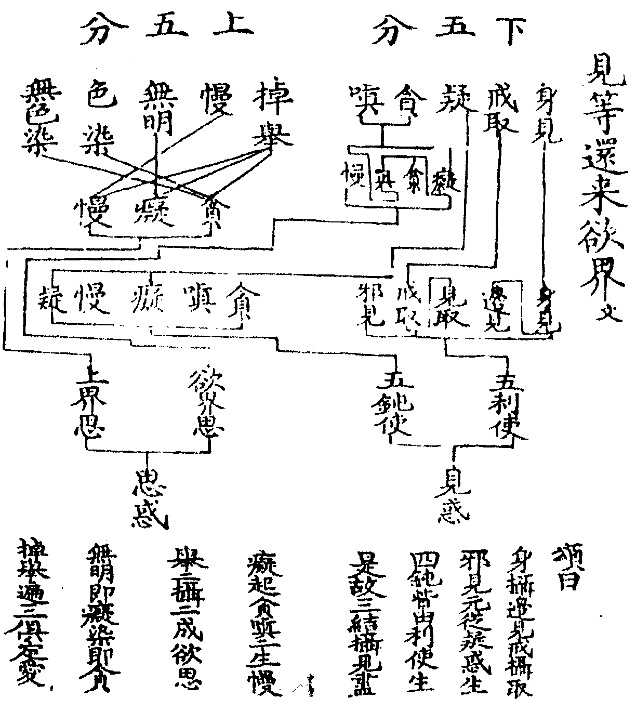
法界次第中(十一)云滅以滅無為義結業既盡則無生死之累故名為滅妙玄二(二十)云二十五有子果縛斷是滅諦(文)觀音玄記上(十七)云滅諦之體是二涅槃雖非真諦能冥於理故云因滅會真滅非真諦因滅苦集方能會真非謂此滅便是真諦止觀一(十二)云法性自天而然集不能染苦不能惱道不能通滅不能淨如雲籠月不能妨害却煩惱已乃見法性經言滅非真諦因滅會真滅尚非真三諦焉是(文)輔行一下(十一)云當知苦集但是能覆不能惱染道滅能顯而理本淨法性如月苦集如雲道如却除滅如却已(文)。
法界次第中(十)云道以能通為義正道及助道是二相扶能通至涅槃故名為道(文)妙玄二(二十)云戒定慧無常苦空能除苦本是道諦(文)畧則戒定慧釋籤(三九)道品雖多戒等攝[書-曰+皿]戒攝三(正語正業正命)定攝十(四如意足定根定力除覺定覺捨覺正定)慧攝十八(四念處四正勤進根慧根進力慧力擇覺進覺喜覺正見正思惟正精進)通定慧(念根念力念覺正念止觀七九云念通緣兩處)通三學(信根信力輔行云一切諸法信為本故文)廣則三十七道品三四二五單七隻八若六度攝三十七具如輔行七上(廿一)道品者法界次第中(十二)云品者類也此七科法門悉是入道淺深之氣類故云道品也(文)。
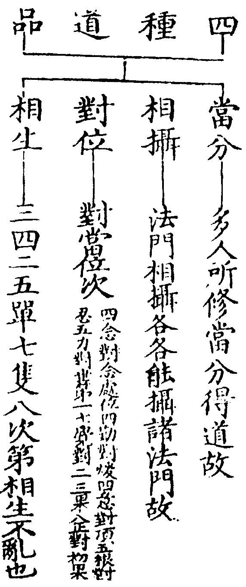
然此道品通正通助通大通小通漏通無漏亦漏亦無漏並如止觀第七具釋又小唯正道大通正助今是小乘道品義當相生。
一四念處一觀身不淨(色蘊)二觀受是苦(受蘊)三觀心無常(識蘊)四觀法無我(想行蘊)。
四念處一五云四者數也念者觀慧也處者境也今言四者人於五陰起四倒故於色多起淨倒於受多起樂倒於想行多起我倒於心多起常倒舉四倒故言四也若相生次第應言識受想行色若觕細次第應言色行想受識今從語便故言身受心法文若迷心不迷色則數為五陰若迷色不迷心則數為十二入若心色俱迷者則數為十八界如婆沙論俱舍頌云聚生門種族是蘊處界義愚根樂有三故說蘊處界(諸有為法和合是聚義生長門是處義以能生長心心所法種族是界義如一山中有金銀銅銕等名多界等補註十三卷十二帋)。
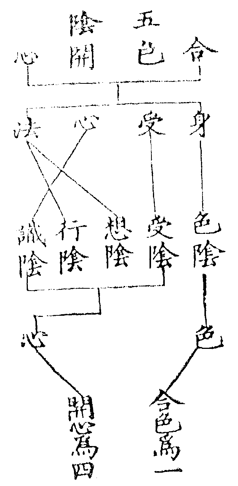
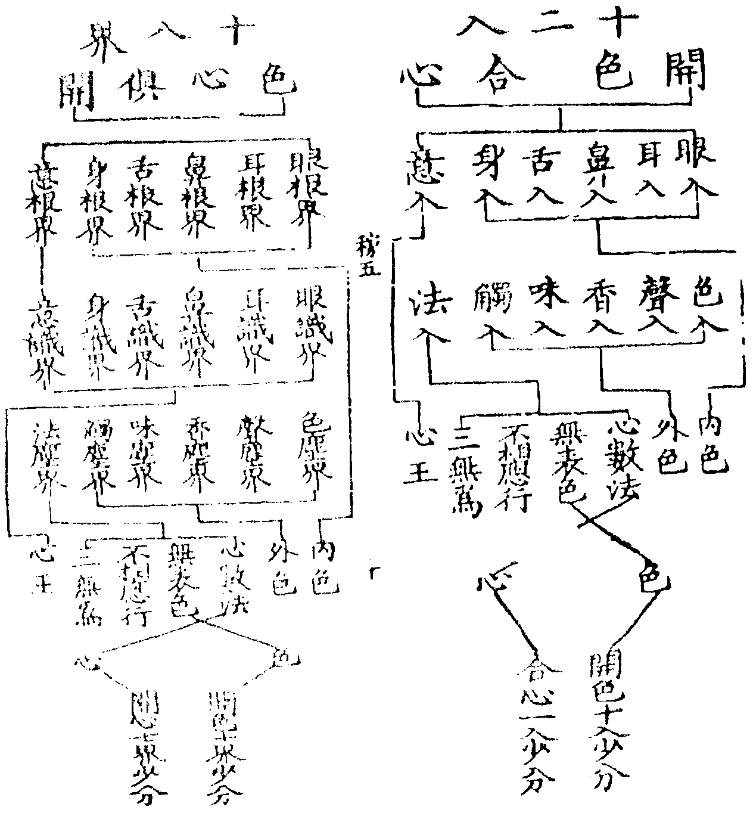
觀身不淨四念處一六云一切色法名之為身內身外身內外身己名內身眷屬及他名外身若己若他名內外身此三種色皆從前世不淨業生則有五種不淨謂生處種子相性究竟生處者女人之體是不淨聚蟲膿穢惡合集成立經十月日二臟間夾迮隘如獄釋論云此身非蓮華亦不由旃檀糞穢所長養但從尿道出種子不淨者攬父母遺體赤白二渧於中而住是識隨母氣息出入是為受身最初種子不淨也相不淨者頭等六分從首至足純是穢物譬如死狗[書-曰+皿]海水洗洗死屍[書-曰+皿]唯餘一塵一塵亦臭性不淨者根本從穢業生託於穢物長養其性自爾不可改變究竟不淨者業[書-曰+皿]報終捐棄塚間如朽敗木大小不淨盈流於外文觀受是苦四念處一七云領納名受有內受外受內外受緣內名內受緣外名外受緣內外名內外受又意根受名內受五根名外受六根名內外受一一根有順受違受不違不順受於順生樂受於違生苦受於不違不順生不苦不樂受樂受是壞苦苦受是苦苦不苦不樂受是行苦觀心無常者心即心王心王不住體性流動若麄若細若內若外皆悉無常觀法無我四念處一七云法名軌則有善法惡法無記法人皆約法計我我能行善行惡行無記若於心王計我已屬心念處攝若於心數計我從九心數一切善數惡數通大地數並屬行陰法念處攝此等法中求我决不可得龜毛兔角但有名字實不可得若善法是我惡法應無我若惡法是我善法應無我若無記是我無記不能起業但名因等起因此無記起善起惡善惡業尚非我因等起何得是我當知皆無有我但是行陰故經云起惟法起滅惟法滅但是陰法起滅無人無我眾生壽命雖有法起亦是顛倒顛倒者即是身邊二見想行蘊者止觀五八云想取相貌行起違從文念處居初者一佛囑佛將入涅槃阿難請問佛去世後比丘依何修道佛荅比丘當依四念處行道二依經止觀五二云大品云聲聞人依四念處行道菩薩初觀色乃至一切種智章章皆爾故不違經文三現前止觀五連云又行人受身誰不陰入重擔現前是故初觀文輔行七上十二云以四念處能為大小觀行初門如來殷勤遺囑意在於斯文。
二四正勤一未生惡令不生二已生惡令滅三未生善令生四已生善令增長。
正則不邪勤則不怠輔行七上(十二)云只是於前念處精勤除惡生善文從語便先除二惡次生二善據行必以已生善惡居先未生善惡居次並先明滅惡次明生善文止觀七(二十六)引十住毘婆沙偈云斷已生惡法猶如除毒蛇斷未生惡法如預防流水增長已生善如溉甘果栽未生善為生如鑽木出火文一未生惡令不生四念處觀時若懈怠心起及諸煩惱惡法雖未生恐後應生遮信等五種善根今為不令生故一心勤精進方便遮止不得令生也二已生惡令滅四念處觀時若懈怠心起諸煩惱覆心離信等五種善根如是等惡若已生一心勤精進方便除斷令[書-曰+皿]也三未生善令生四念處觀時信等五種善根未生為令生故一心勤精進方便修習令善根生也四已生善令增長四念處觀時信等五種善根已生為令增長故一心勤精進方便修習令不退失增長成就法界次第中十三。
三四如意足。
(欲念進慧)法界次第中(十三)云智定力等所願皆得故名如意足此四屬定六神通中身如意足藉茲而顯又通因定生亦可六通因茲並發四正勤是慧慧觀不勤念處不成反招散動如風中燈令修如意如加密室定慧均等欲者希向慕樂莊嚴彼法言彼法者謂念處境言莊嚴者修希向心令法端羙凡所修立一切諸法若無樂欲事必踈遺念者專注彼境一心正住若無一心觀法斷絕進者唯專觀理使無間雜無雜故精無間故進凡所修立一切諸法若無精進事必不成慧者止觀法界次第皆名思惟思惟彼理心不馳散當知四法是入定方便(出輔行七上十二)析玄下(三十六)云四觀神足心所中慧以覺察為義妙樂二(入云)思是慧數文。
四五根(信進念定慧)。
輔行七上(十二)云修前諸品縱善萌微發根猶未生根未生故萌善易壞令修五法使善根生故此五法皆名為根文信者信於諦理能生一切無漏根力禪定觧脫三昧等然此信根必依念處若無信境根何能生進者信諸法故倍策精進念者但念正助之道不令邪妄得入定者攝心在正道及諸助道善法中相應不散慧者念處之慧為定所攝以觀自照不從他知。
五五力(同上根名)。
前不入故進修五力令根增長則能排障同上根名者輔行七上(十三)云問名同於根何須更立荅善根雖生惡猶未破復更修習令根增長是故此五復受力名根成惡破故名為力(文)釋籤一(丸)云信觧品云無有欺怠嗔恨怨言欺為信障怠為進障嗔為念障恨為定障怨為慧障若根增長能破五障故名為力(文)信力信諦不為邪外諸疑所動進力觀諦心無間雜本求道果未證不休念力持諦破邊邪想不令煩惱之所破壞定力若成能破欲界一切諸散能於諸禪互無妨碍不同單修根本之相慧力能破一切邪外等慧能破一切見愛等執。
六七覺支(念擇進喜輕安定捨)。
修前不入由定慧不調故用七覺均調學謂覺了支謂支分法界次第中(十四)云無學實覺七事能到(文)止觀七九云心浮動時以除覺除身口之麤以捨覺捨於觀智以定心入禪若心沉時以精進擇喜起之念通緣兩處(文)輔行七上(十三)云定慧各三各隨用一得益便止無假徧修若全無益方趣後品念能通持定慧六分是故念品通於兩處文。
七八正道(正見正思惟正語正業正精進正定正念正命)。
正以不邪為義能通至涅槃故名為道正見修無漏十六行故明見四諦正思惟以正思惟發動此觀正語以無漏智除四邪命常攝口業住正語中正業以無漏智除身邪命住於清淨正身業中正精進勤修涅槃善入正諦正定正住於理决定不移正念心不動失正直不忘正命以無漏定慧通除三業中五種邪命見他得利心不熱惱而於己利常知止足住清淨正命。
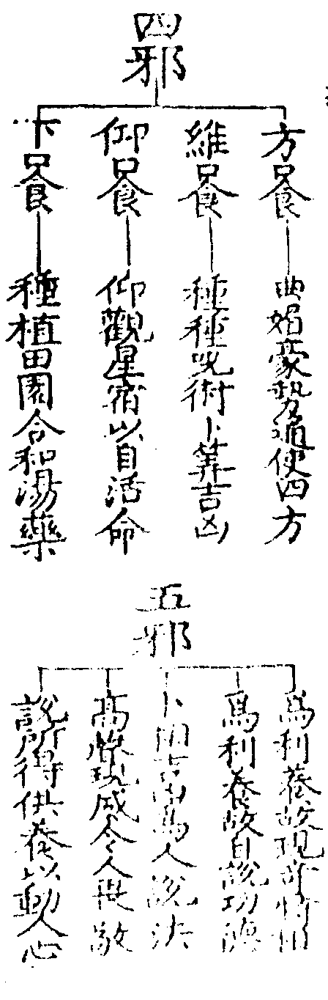
已上七科即是藏教生滅道諦。
然如前所列四諦名數通下三教但是隨教廣狹勝劣生滅無生無量無作不同耳故向下名數更不再列。
釋籤三(八)云問何故立四種四諦之殊荅諦本無四諦秪是理理尚無一云何有四故知依如來藏同體權實依大悲力無緣誓願物機所扣不獲而用機宜不同致法差降從一實理施出權理權實二理能詮教殊故有四種差別教起涅槃實後暫用助圓故須具用偏圓事理故今引之以顯誠證三偏一圓界內界外各一事理故成四種(文)廣狹等者以藏通造六故狹別圓造十故廣藏別不即故劣通圓談即故勝於廣狹境各論勝劣則成四種四諦迷真有重輕故論生滅無生迷中有重輕故論無量無作不可作尋常迭論勝劣釋也生滅妙玄二(二十)云迷真重故從事受名如前釋無生妙玄二(二十)云迷真輕故從理得名苦無逼迫相集無和合相道不二相滅無生相無量妙玄云迷中重故從事得名苦有無量相十法界不同故集有無量相五住煩惱不同故道有無量相恒沙佛法不同故滅有無量相諸波羅蜜不同故(文)無作妙玄云迷中輕故從理得名止觀一三云陰入皆正無苦可捨無明塵勞即是菩提無集可斷邊邪皆中正無道可修生死即涅槃無滅可證(文)。
然四諦之中分世出世前二諦為世間因果(苦果集因)後二諦為出世間因果(滅果道因)。
釋籤三(八云)苦集只是世間一法道滅秪是出世一法世出世法因果性殊而因必趣果因果類異故值四殊(文)。
聲聞根鈍苦為初門支佛以集菩薩以道通菩薩以滅別菩薩以界外道圓菩薩以界外滅慕果修因且據凡位若初果去則云帶果行因支佛不立分果乃云望果行因四諦果前因後此且一途餘亦不定。
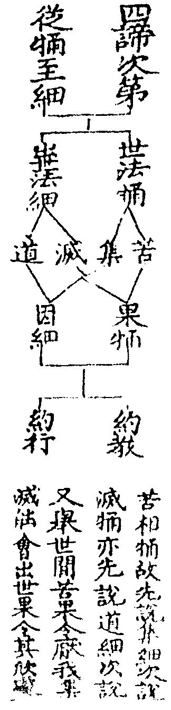
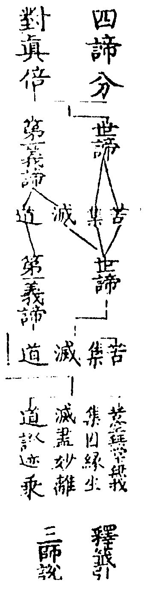
畧明藏教修行人之與位。
通標一教修行之人及三乘位次妙玄四(三十二)云為破行人增上慢心為消經文引物希向(文)釋籤五(廿二)云若無位次將何以為見賢思齊將何以越增上慢罪(文)。
凡有四門明位一毘曇有門明七賢七聖二成論空門明二十七賢聖三毘勒論明雙亦門四車匿論明雙非門後二門大論雖指論文不度若空門二十七賢聖者學人十八無學有九四教義二(十七)云賢人有二聖人有二十五(文)凡位不俻今家不用釋籤五(二十)具引今依有門明聲聞位者有三意一凡聖位足二佛法根本三符順教旨佛法根本者有門所說世間諸法乃是無明正因緣生不同外道邪無因緣生也又四教義云大乘經論破小用小多取有門少用空門故須畧出毘曇有門佛法根本賢聖之位(文)又(二初)云三藏四門雖俱入道而諸經論多用有門乃至圓教多用非空非有門今不列七聖直作四果釋者名義顯故。
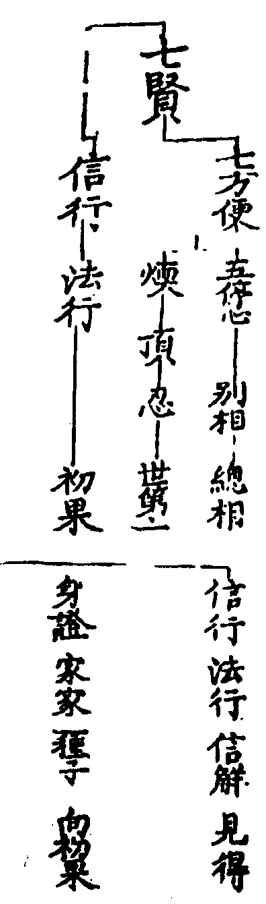
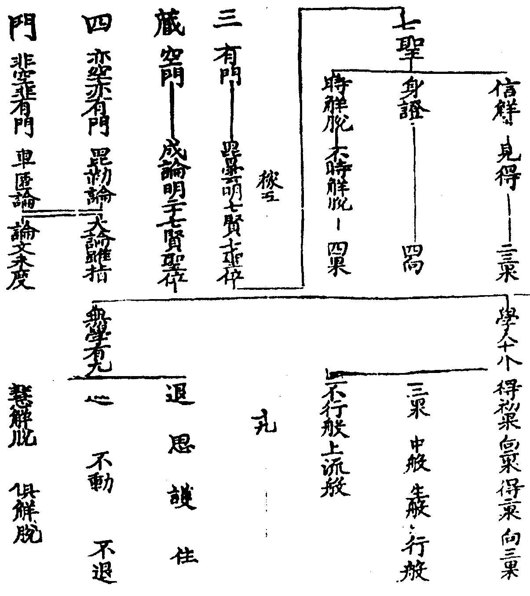
此依釋籤五(十八)列成論二十七賢聖若輔行凖俱舍列則無身證故料揀云何緣身證不預其數荅無漏三學是聖者因擇滅涅槃是聖者果滅定有漏不是依因是故身證不預其數中阿含(川一)云長者問佛福田有幾佛荅同俱舍且據學無學二十七人是同然福田經列身證俱舍則無也凡者常也亦名為賢賢者善直亦曰鄰聖分內外者相似見理名內未得似觧名外。
釋外凡中自分三初五停。
心停者止義住義修此五法止住五過心者有四種一草木二肉團三積聚精要四慮知今是慮知心也此五停心通於四教具如四念處明妙玄五三以五停心對圓五品禪門二(五)以停心名五門禪義該大小通於凡聖菩薩等修今是三藏聲聞助道也貪等是境不淨是觀四教義二(四)云心既調停乃可習觀猶如密室之燈入道根本無過此五法也(文)或云五停心觀則從慧或云五門禪則從定定慧調適故名停心。
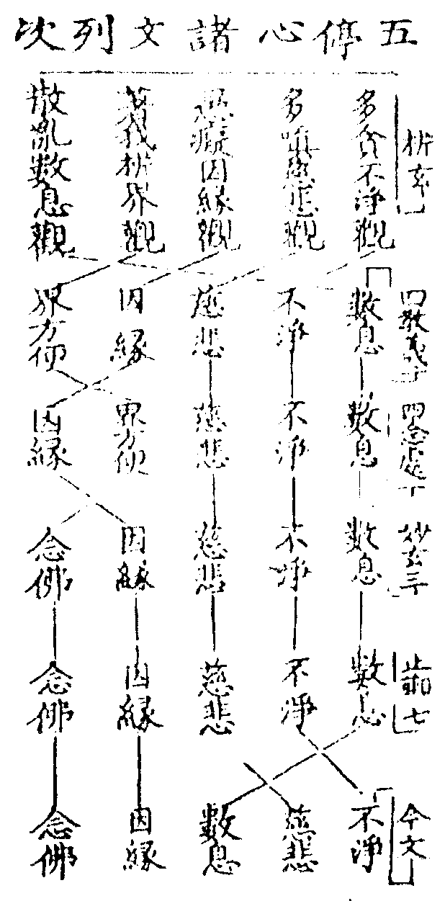
然上列次析玄以不淨觀居初者約三不善根次第也第四明析界觀者約不善根後辦第五明數息者散亂是隨煩惱故於煩惱後辯四教義等文皆以數息居初者順修禪人必先攝散入定故四教義二云今依禪門辯次第也以病先後隨人不須定執前後次第也又諸文專以不淨數息居初者妙樂六(十)引俱舍云入道要二門不淨觀數息析界與念佛互存沒者四教義二(四)問此處何不說念佛三昧為五種耶荅開因緣出界方便代也(以二世因緣與界方便皆破着我能破雖異所破是同故開二世因緣以破着我却出界方便代念佛也且界方便何以能代念佛耶故下即釋出云)界方便與小乘念佛相同亦破境界逼迫障(以界方便能破之相與念佛所破境界之相是同以皆不出六界十八界故念佛破境界逼迫障界方便亦破也)又四念處一云問此中何不云念佛停心荅作五度門則不用作六度門則須用因緣自對等分(性實斷常着我此三皆有故云等分)念佛對逼迫障(文)止觀七(十七)云毘曇以界方便破我(謂觀破六界十八界也)如輔行七上對治不同今圖示之。
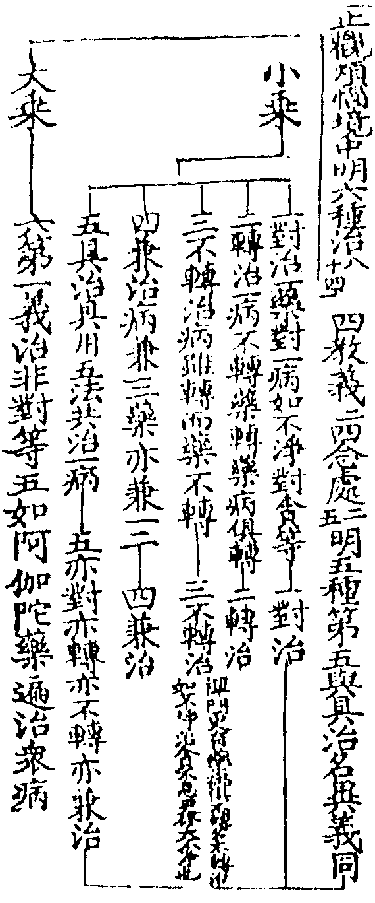
多貪眾生不淨觀。
六識妄心於順情境上引起無厭故言多貪禪門第四明三種貪一外貪男女身分互相貪着用九想觀治(觀他身)九想者(一胮脹二青瘀三壞四血塗漫五膿爛六噉七散八白骨九燒)二內外貪於他己身而起貪愛用八背捨治(先觀內身骨鎻故能治內)三遍一切處貪資生五塵等物用大不淨觀治(即八勝處因於自身骨人觀成漸見十方依正故能治自他貪欲)析玄上八明四種一顯色謂青黃等作青瘀想二形色長短等形作壞爛想三妙觸自他身分細軟光澤作虫蛆想四供奉祇承適意用死想治也此四望大論六種缺人相音聲姿態等此不淨觀與念處觀身有異一正助不同彼正此助二自他境別彼觀自身此想他境三假實觀異彼是實境此是假想。
二多嗔眾生慈悲觀。
於違情境上忿恨不已名曰多嗔佛令修慈悲觀可以對治若凖禪門第四一義通大乘境觀有三一非理嗔(歘起嗔心不問可否)修眾生緣慈(一切眾生如己眷属)二順理嗔(人實來惱我)修法緣慈(見一切法皆從緣生)三諍論嗔(着己所觧為是謂他說行為非)修無緣慈(能所一體慈即無緣)今是小乘助觀當彼第一眾生緣慈若法界次第則具明慈悲喜捨四無量心今但慈悲析玄凖俱舍論七周行慈輔行九(下五)依婆沙明九周行慈而皆不出七境三樂謂上親(父母師長)中親(兄弟娣妹)下親(朋友知識)中人(非冤非親)下冤(害下親者)中冤(害中親者)上冤(害上親者)三樂者析玄(上十一)謂諸佛(上)菩薩(中)諸天(下)輔行引婆沙云三禪(上)四事(中)經行處(下)輔行(九五)引婆沙云問與眾生何處樂荅有說與三禪樂樂中勝故有說與四事樂已曾得故有說與經行處所有樂至所住處思惟令得文若析玄三樂恐成過分隨機之說貴在治障不可槩論。
天台四教儀集註卷第五